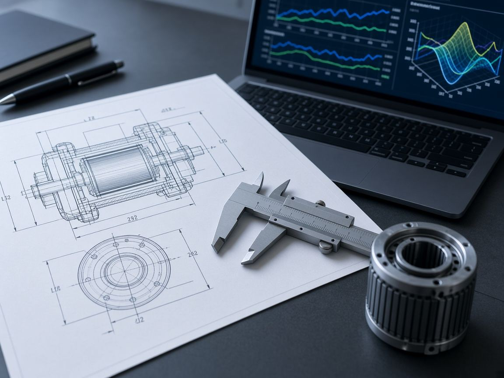
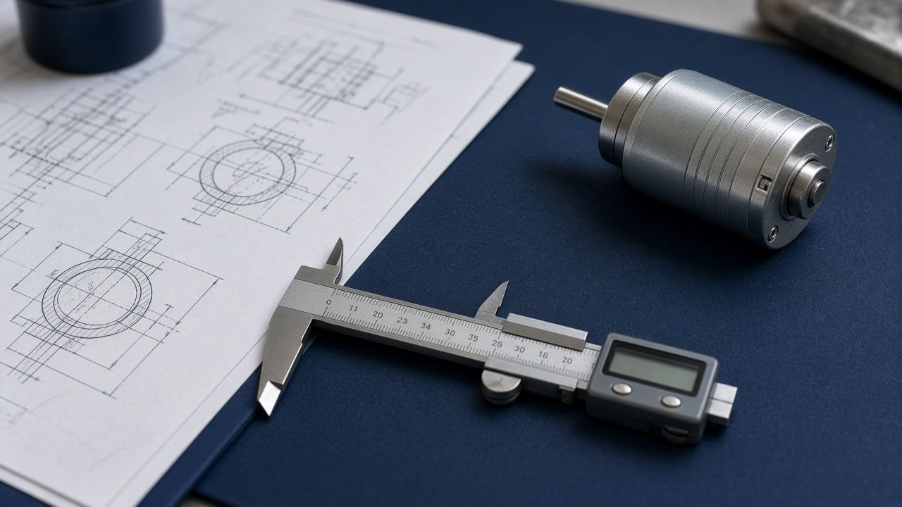

Company Profile
公司簡介
YiEng Electric Co., Ltd.（義英電機有限公司）是一家專注於工業用馬達及相關電機產品進出口與整合服務的公司。
我們深耕馬達產業，連結國內外供應鏈，提供 AC／DC 感應馬達、伺服與步進馬達、減速馬達、防爆及特殊用途馬達，以及變頻器等動力系統產品的採購與貿易服務。
與一般貿易商不同，我們更重視產品在現場的實際表現。從需求諮詢、規格選型到交貨後的使用支援，我們協助客戶解決「怎麼選、怎麼用、怎麼長期穩定運轉」的實務問題，讓每一台馬達都能發揮應有的效能。

專業整合專業・誠信・效率
| 公司名稱 | 義英電機有限公司 YiEng Electric Co., Ltd. |
|---|---|
| 主要業務 | 工業用馬達進出口、品牌採購與代理協助、規格選型與應用諮詢、客製化需求整合、電機與動力系統貿易 |
| 產品範圍 | AC 感應馬達、DC 直流馬達、伺服／步進馬達、減速馬達、防爆／特殊用途馬達、變頻器與動力系統產品 |
| 服務對象 | 設備製造商、系統整合商、工廠維護與採購單位、貿易夥伴 |
| 聯絡人 | 謝義森 |
| 聯絡信箱 | artisticmagpkj54@gmail.com |
Philosophy
經營理念
以「專業、誠信、效率」為核心，建立長期而穩定的合作關係。
01
專業 Professionalism
熟悉馬達規格與各類應用，從負載、環境與成本面向綜合評估，提供精準而實用的選型建議。
02
誠信 Integrity
以透明、負責的態度經營每段合作關係。報價清楚、資訊公開，說到做到。
03
效率 Efficiency
精實的組織架構讓溝通更直接，從詢價到交貨都能快速回應、確實追蹤。
Mission & Vision
我們的使命與願景
我們相信，好的動力方案不在於最貴的產品，而在於最合適的搭配。義英電機希望成為客戶身邊可以信賴的馬達專業夥伴，讓設備運轉更穩定、採購更有效率。
使命
以專業的選型與穩定的供應，協助客戶在製造、自動化與設備應用中，找到最合適且具成本效益的動力方案。
願景
持續連結國際供應鏈與在地需求，成為客戶長期信賴的工業馬達與電機整合服務夥伴。

Quality & Sourcing
品質與採購承諾
我們深知馬達一旦選錯或品質不穩，影響的是整條產線的運作。因此在每一筆交易中，我們都堅持以下原則：
- 規格逐項確認：下單前與客戶確認功率、電壓、轉速、安裝方式與環境條件等關鍵規格。
- 來源透明：清楚說明產品來源、型號與相關資訊，不以模糊資訊報價。
- 出貨前核對：出貨前核對品項、規格與數量，降低錯誤與延誤的風險。
- 進度主動回報：採購與進口過程中主動追蹤並回報進度。
- 交貨後支援：提供安裝、使用與後續替換相關的諮詢服務。